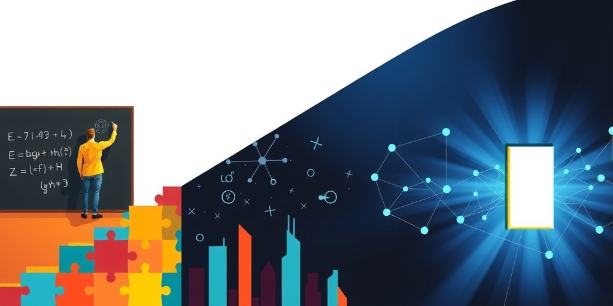

小汪老师的成长洞察 · 属于你的成长专栏
高考分数出来了，一家三口坐在电脑前翻志愿填报指南。母亲说学计算机，父亲说学人工智能，孩子自己盯着排名表发呆。三个字被反复提起——「做AI」。但没人追问过一个问题：到底学什么才算「做AI」？标准答案说计算机科学，这个答案没错，但太粗糙了。粗糙到可能让一个适合走交叉路线的人，硬挤进纯算法赛道，四年后发现自己只是万人竞争中的一个模糊影子。
AI不是一个孤立的专业。它是一个由十几个学科共同撑起来的技术生态。不同专业跟AI的关系有四种完全不同的模式。
第一类是同源型，理论共享，学科边界已经模糊。计算机科学、数学统计、控制自动化，它们跟AI说同一种母语。第二类是工具型，把AI当工具解决本领域问题。通信工程用深度学习做信道估计，遥感用CV分析卫星图像，力学用PINN做物理模拟。
第三类是载体型，为AI提供落地场景。医学影像诊断、基因组学、金融风控、法律合同审查，这些领域的专业知识是AI落地最稀缺的东西。第四类是支撑型，为AI造基础设施。芯片设计、光学传感、网络通信、数据中心供电，AI离开它们跑不动。一句话概括：同源型「造AI」，工具型和载体型「用AI」，支撑型「养AI」。四类都不可或缺，但职业路径完全不同。
计算机科学是AI的母学科。机器学习、视觉、语言、推荐系统，全部是CS的分支。优势是就业宽度最大，从大厂AI Lab到创业公司全吃。但劣势同样明显：所有人都涌进来，你不仅要跟同届的CS毕业生卷，还要跟所有从其他专业转过来的人卷。
纯算法岗位挤满了人，但AI系统架构岗竞争相对缓和。大模型时代对系统能力的需求在暴涨，这是CS人更容易拿到的安全区。数学和统计则是性价比最高的隐藏选项。在很多高校，数学录取分比计算机低一截，但转AI的路径极其通畅。线性代数、概率论、优化理论是深度学习的全部数学基础。Transformer的注意力机制、扩散模型的数学框架，都是强数学背景的人提出的。
数学系出身的人对模型为什么work、为什么不work有根本性的直觉，这是纯CS训练很难给的。短板是工程能力弱，需要补编程和系统设计。但在AI研究方向，数学背景的天花板反而最高。控制科学与自动化是AI的亲兄弟——强化学习是最优控制的现代形式，卡尔曼滤波是贝叶斯状态估计。控制出身的人天然懂系统和约束，这在AI工程化时代是稀缺思维，在机器人、自动驾驶、智能制造方向优势极大。

电子信息工程跟AI有明确的数学对应。信号处理里的卷积、傅里叶变换跟CNN底层操作同源。硬件加软件的复合背景在边缘AI时代是优势。物理学跟AI有更深的理论联系——统计物理和深度学习理论之间有深刻的类比关系。物理学的建模思维，把一个复杂现象抽象成几个核心变量，在AI研究中极度稀缺。
但「AI+领域知识」的交叉人才才是真正的稀缺品。生物医学工程就是这个逻辑的代表。一个训练了三年的影像科医生看一张CT要五分钟，一个训练好的CNN模型只需要0.3秒。但谁来标注那十万张训练集？谁来判断模型的误诊率在临床上能否接受？这是医工交叉的人的活，不是纯CS的人能干的。
化学和材料同AI for Science是主战场。AlphaFold解决了蛋白质折叠，类似方法正用于新材料发现和催化剂设计。纯CS的人连分子式都看不懂，但你知道什么反应路径是合理的。domain knowledge的壁垒高到不可翻越——在这个交叉点上，你不是在跟几百个CS毕业生竞争，你是在一个几乎空白的领域里独自掘金。机械工程提供机器人的身体、电气工程做智能电网、航空航天做自主导航，这些领域的共同特点是AI渗透率不高但有明确增长趋势，先入场的复合型人才有先发优势。
一份诚实表格应该这样读：理论亲近度决定起点，就业宽度决定容不容易找到工作，不可替代性决定十年后还有没有被替代的风险。计算机科学的理论亲近度最高，就业最宽，但不可替代性只能算中等。因为纯CS的人太多，AI基础能力正在被各种工具民主化。
数学和统计的不可替代性是满分——数学直觉无法被工具替代，Transformer出现之后需要更深的优化理论来解释，不是更少。生物医学工程的不可替代性也是满分，你懂的病理和生理，一辈子都是你的护城河。化学和材料同理，domain knowledge的壁垒纯AI研究者几乎无法越过。
两个毕业生同时面试AI岗位：一个是CS的，算法能力85分，但领域知识0分；一个是学生物医学工程的，算法能力60分，但懂医学影像。后者可能输掉所有纯算法岗，但在AI医疗赛道，前者的简历可能连初筛都过不了。因为这个岗位看的是你有没有在人身上用过算法，不是你的算法精度比别人高0.5%。反直觉的核心洞察在这里：CS的理论亲近度最高，但恰恰因为太多人涌入，纯CS做AI的竞争优势在稀释。反而是AI加领域知识的交叉人才更加稀缺且不可替代。选专业时，不要把「跟AI最近」当成最高优先级，要把「我有什么别人补不上的东西」当成最高优先级。
写给你的话
如果现在高考，十年后刚好是AI for Science这股浪潮的中坚力量。AlphaFold拿了诺贝尔化学奖，这是一个分水岭——AI进入基础科学研究不是趋势，是正在发生的事实。未来十年最值钱的不是会写AI代码的人，是既懂某个古老学科、又懂如何把AI放进去的人。选专业的那个下午，你面对的不只是一张志愿表。你面对的是一种判断：你是想去一个挤满人的竞技场比谁跑得快，还是想去一个还没什么人走的路，成为那个定义规则的人。数学不好的话，做AI算法会非常痛苦——不是不能，是非常痛苦，要做好心理准备。诚实是这个话题最稀缺的态度。
参考资料
[1] Words of Wisdom by Sandra Carey: "Never mistake knowledge for wisdom. One helps you make a living; the other helps you make a..." (The Economic Times) https://economictimes.indiatimes.com/news/international/us/words-of-wisdom-by-sandra-carey-never-mistake-knowledge-for-wisdom-one-helps-you-make-a-living-the-other-helps-you-make-a-why-life-success-needs-more-than-information/articleshow/131659778.cms
小汪老师的成长洞察 · 属于你的成长专栏